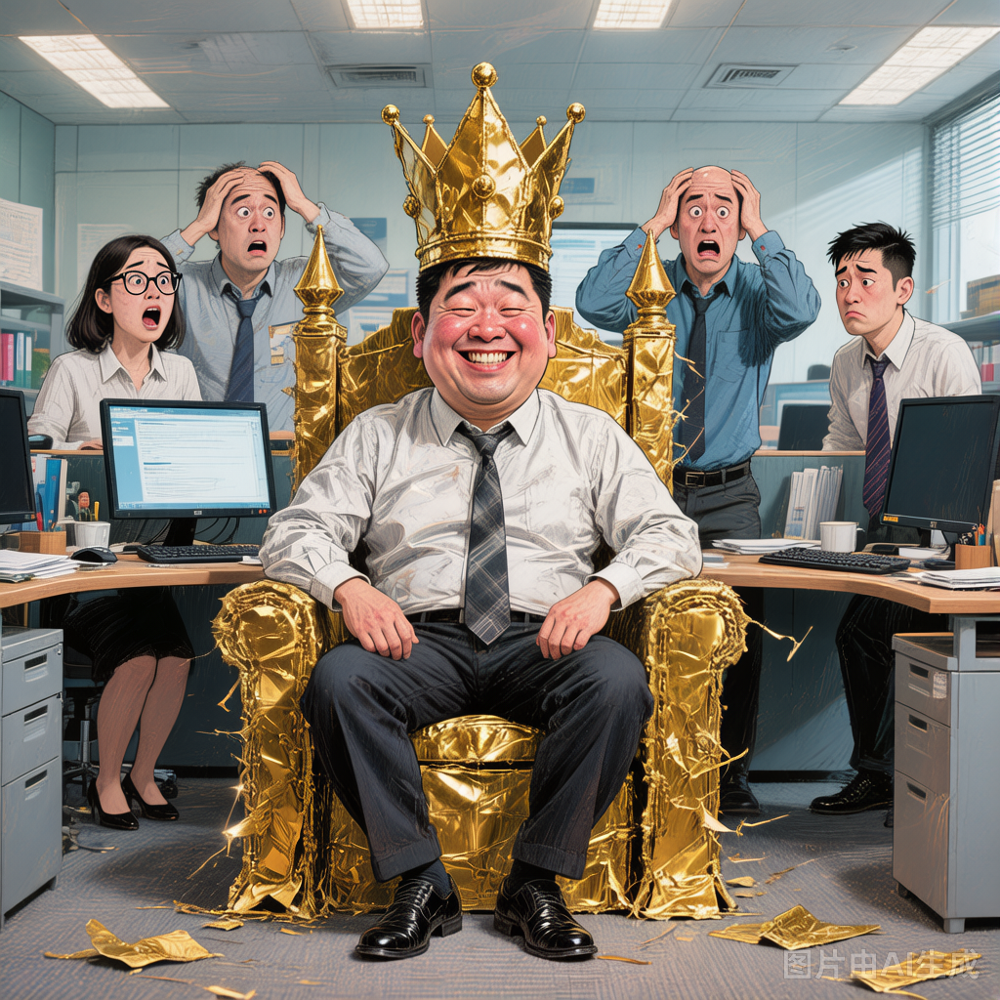
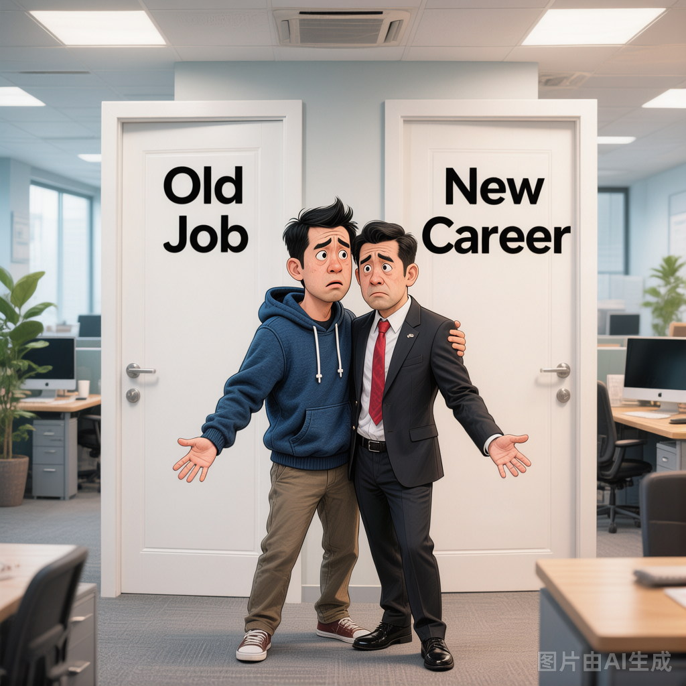
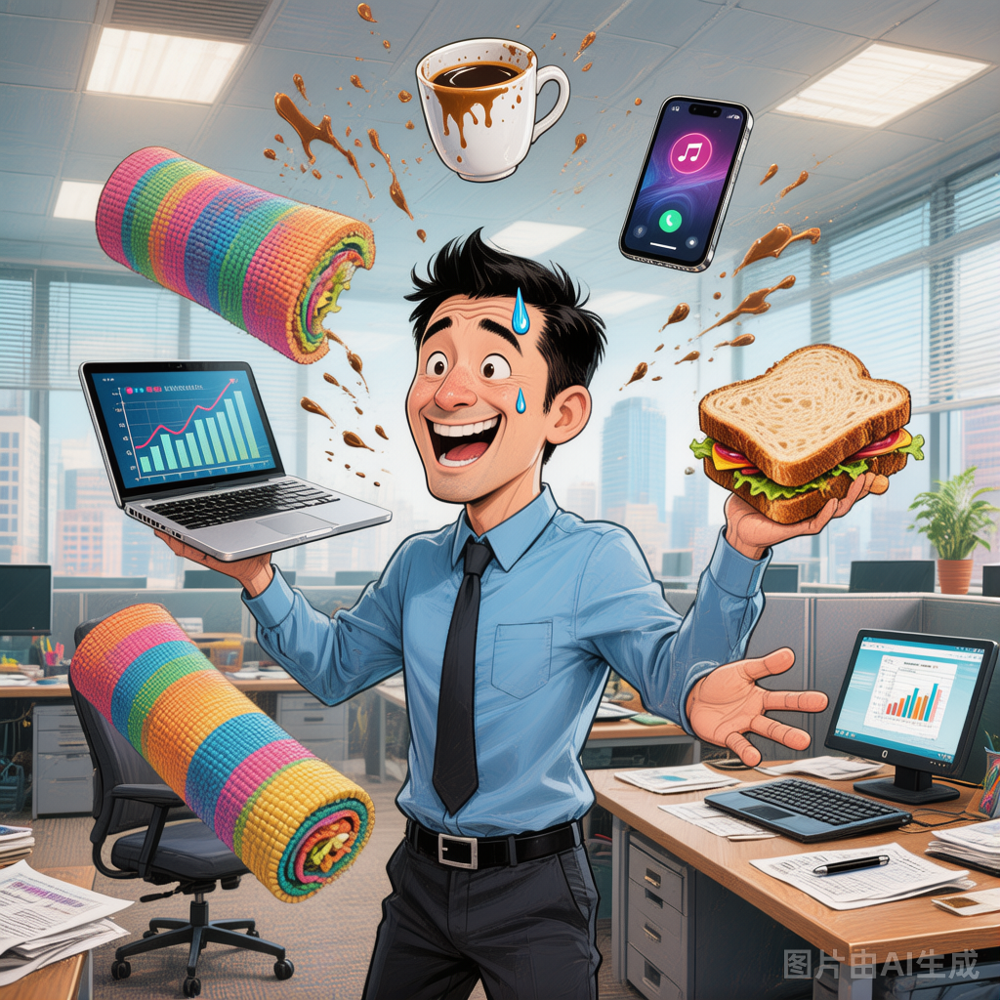
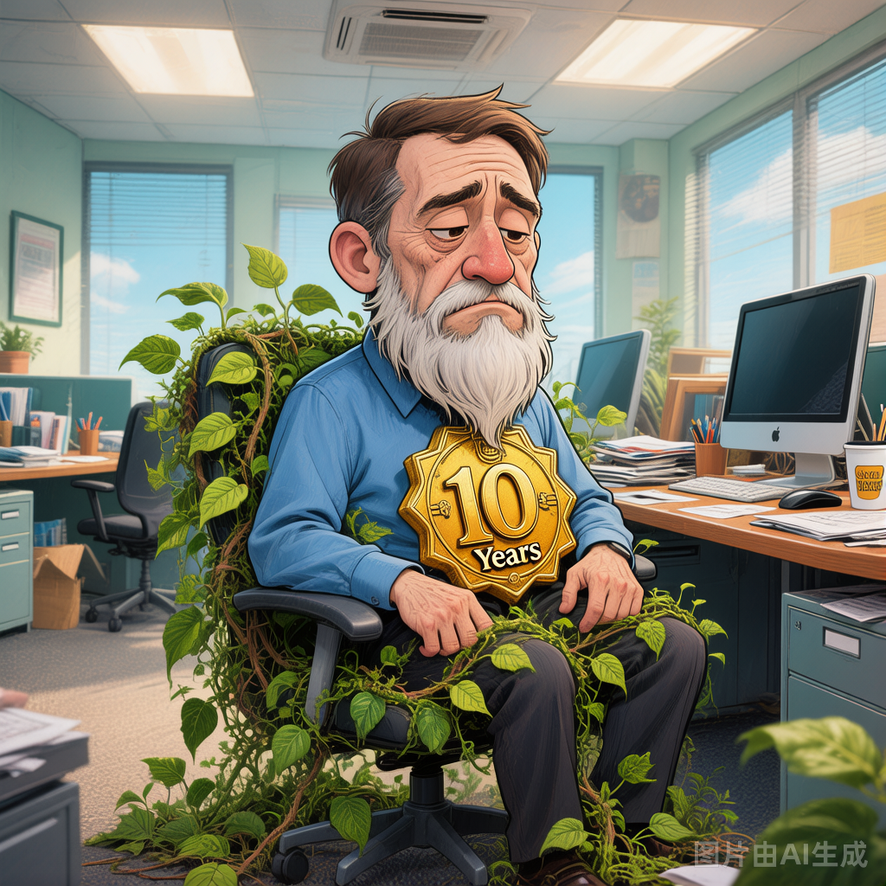

01

Promote
/prəˈmoʊt/
vt. 晋升；提拔；推广；促进
职场中指将某人提升到更高职位，也用于推广产品或理念。
She was promoted to Senior Project Manager after successfully leading the cross-department initiative.
她在成功主导跨部门项目后被晋升为高级项目经理。
Promote = pro（向前）+ mote（移动）→ 把人向前推 → 晋升！想象老板把你向前一推，你就升职了！
02
Ambitious
/æmˈbɪʃəs/
adj. 有雄心的；有抱负的；野心勃勃的
形容有强烈上进心、追求更高目标的人或计划。
He is an ambitious young professional who aims to become a director within five years.
他是一个雄心勃勃的年轻职场人，目标是在五年内成为总监。
Ambitious 谐音"俺必胜"→ 俺必胜的决心就是雄心壮志！有野心的人总觉得自己必胜！
03

Transition
/trænˈzɪʃən/
n./v. 转变；过渡；转型
职场中指从一种角色、部门或职业向另一种转变的过程。
The company provided training to support employees during the transition to the new organizational structure.
公司提供了培训来支持员工向新组织架构的转型过渡。
Transition = trans（跨越）+ ition（名词后缀）→ 跨越到新状态 → 转变！就像从一扇门跨到另一扇门！
04

Versatile
/ˈvɜːrsətl/
adj. 多才多艺的；多面手的；通用的
形容能胜任多种角色或任务的人，也可形容功能多样的工具。
Being versatile is a key advantage in today's rapidly changing job market.
多才多艺是当今快速变化的就业市场中的关键优势。
Versatile 谐音"万能手"→ versa（翻转）+ tile → 能翻转到任何角色 → 多面手！什么都能干！
05

Tenure
/ˈtenjər/
n. 任期；在职期间；终身教职
指在某个职位上任职的时间长度，也特指大学终身教职。
During her tenure as CTO, the company's revenue tripled and the engineering team grew fivefold.
在她担任CTO期间，公司收入增长了三倍，工程团队扩大了五倍。
Tenure 谐音"ten年"→ 在一个位置待了ten年 → 任期很长！联想"十年磨一剑"就是长期在职！